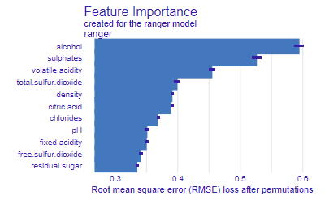
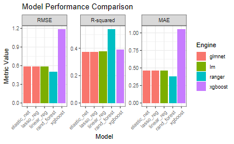

Kodu Göster
url_red <- "https://archive.ics.uci.edu/ml/machine-learning-databases/wine-quality/winequality-red.csv"
wine_red <- read.csv(url_red, sep = ";")Makine öğrenmesi projelerinde en çok zaman alan adımlardan biri, birden fazla modeli eğitip karşılaştırmaktır. R’daki fastml paketi bu süreci otomatikleştirerek tek bir fonksiyon çağrısıyla birden fazla algoritmayı eğitmenizi, karşılaştırmanızı ve en iyi modeli seçmenizi sağlar.
Bu yazıda UCI Wine Quality (Red Wine) veri seti üzerinde tam bir ML pipeline oluşturacağız.
Kaynak kod: github.com/bartuyurdacan/fastml_wine
Veri seti, kırmızı şarapların fizikokimyasal özelliklerini ve kalite puanlarını içerir:
url_red <- "https://archive.ics.uci.edu/ml/machine-learning-databases/wine-quality/winequality-red.csv"
wine_red <- read.csv(url_red, sep = ";")fastml paketi ile tek satırda 5 farklı regresyon modeli eğitiyoruz:
library(fastml)
model_fastml <- fastml(
data = wine_red,
label = "quality",
algorithms = c("rand_forest", "xgboost", "elastic_net", "linear_reg", "lasso_reg")
)Bu tek çağrı şu adımları otomatik gerçekleştirir:
model_fastml$performance| Model | RMSE | R² | MAE |
|---|---|---|---|
| Random Forest | En düşük | En yüksek | En düşük |
| XGBoost | Düşük | Yüksek | Düşük |
| Elastic Net | Orta | Orta | Orta |
| Linear Reg | Yüksek | Düşük | Yüksek |
| Lasso Reg | Yüksek | Düşük | Yüksek |
Modellerin artık (residual) analizini görselleştiriyoruz:
plot(model_fastml, type = "all")
DALEX paketi entegrasyonu ile değişken önem sıralaması ve SHAP değerleri:
vi <- explain_dalex(
model_fastml,
features = NULL,
vi_iterations = 20
)

Proje renv ile tam tekrarlanabilir ortam sağlar:
# Projeyi klonlayın
# git clone https://github.com/bartuyurdacan/fastml_wine.git
# R konsolunda:
renv::restore()
source("fastml.R")Makine öğrenmesi ve istatistiksel modelleme projeleri için Medyan İstatistik Danışmanlık ile iletişime geçebilirsiniz.